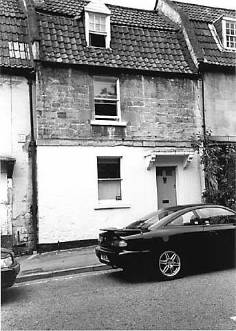

Type of building:
Mid mixed terrace
Listing:
Grade ll
Plan and elevation:
Double pile, single fronted. 2 storied with attic.
Summary of the probable main building
history:
Built c.1750-1760 but with probable earlier origins.

North elevation
Exterior: North or front elevation to the street - similar although not identical to its eastern neighbour and set slightly more forward. Coursed and squared locally quarried Bath stone bonded into the ashlar wall of its western neighbour which is a taller building. A plat band runs the full length of the property above the ground floor level. One sash window (single panes) on the ground floor with the entry to the right under a flat stone hood supported on moulded scrolled stone brackets. The dressed stone surround of the entry is set slightly forward of the facade. The entry is direct from the street. One sash window (single panes) on the first floor. A dormer window at the attic level. “M” shaped tiled mansard (gabled gambrel) roof with a coped raised verge and an ashlar chimney stack on the east end of each of the two parts of the mansard. The rear stack is offset, tending markedly towards the rear of the roof. The south or rear elevation is of roughly coursed rubble stone with dressed stone surrounds to the sash windows, which are of irregular size and some being later insertions. There are no quoins and the entire elevation projects forward of the rear elevation of the property’s western neighbour, which has quoins.
The property is built upon a site steeply sloping north - south towards the river Avon. A flat roof single storey rear extension is thus accessed from the main house by stairs down.
Interior: The ground floor front room has a large stone fireplace with a depressed four-centred arched head and another stone fireplace with a straight head is in the ground floor rear room. A rubble stone masonry buttress in the south-west corner of this room continues up into the upper floors. Building work in early 2003 revealed that the rear room was formerly two rooms with the east smaller room at a lower level than the west larger room, accessed by steps up, the larger room being floored with pennants. Scars of the former partition wall were also revealed. The dividing wall between the ground floor front and rear rooms is of substantial thickness (c. 50 cm.) although this thickness is not maintained up into the first floor. The access doorway between these rooms is in line with the rear external entry forming an apparent cross entry. The staircase leads upwards from the front entry with an ashlar block west party wall on one side and wide board tongue and groove panelling on the other. There is a late 18th Century iron grate in the first floor front room and a mid 19th Century register plate iron grate in the rear room. This room is wainscoted and has some wide elm floorboards (recycled from elsewhere in the house). The attic level front room is entered via a three plank board door secured with one strap hinge and one “H” hinge. The room has a small stone fireplace and wide board tongue and groove partitioning.
The roof timbers are of sawn elm (except where replaced) of substantial almost square scantling, consisting of common rafters, collars, diagonally set and yoked ridge piece. Timbers in both sections of the “M” roof are of the same age (mid 18th Century). The rear roof space is pierced with a dormer window which overlooks the valley between the rear and front roof.
Date & development: A visual inspection reveals a property all of the same 18th Century period (with some 19th and 20th Century modifications to the windows and the internal arrangements and, of course, the flat roof modern rear extension). It is bonded into the end wall of its western neighbour (BE 002), which wall then became the party wall. BE 002 was built in the mid 18th Century so a date of about 1750-1760 is suggested for the property. The building is shown on the 1786 Harcourt Masters map. Nevertheless, there is evidence that the 18th Century house may amount to a substantial rebuilding of an earlier structure. The dividing wall between the ground floor front and rear rooms appears to be a former external wall. It does not rise to the first floor. It contains a doorway opposed to the rear entry. What is now the ground floor rear room may originally have been a single pile, single storey or 1 1/2 storey cottage of probably one unit, but of two rooms, with a cross entry. The following development is then postulated:
1) In about 1740-1750 property BE 002 was built against the west gable end of the cottage and, being a taller building, incorporated quoins.
2) About 1750-1760 the cottage was substantially rebuilt in accordance with contemporary style and space requirements.
The cottage was extended forward towards the road in line with the frontage of BE 002 and bonded to it. This created a double pile property.
4) A first floor and an attic were added and the new property was given a mansard (gabled gambrel) roof with the chimney stack heightened and another stack constructed to accommodate the fireplaces installed in the new front rooms.
5) To provide more space the cottage west gable wall was removed so that the east end wall of BE 002 became the party wall. However, as the cottage’s rear wall projected beyond the rear wall of BE 002 part of the cottage west gable wall was retained to provide a bond with the new party wall and extended upwards to the new upper level. This is the masonry buttress evident in the south-west corner of the present ground floor rear room.
References:
- Batheaston Society archives
Reference Pictures
| Depressed four-centred arched stone
fireplace |
Survey Drawings
| Conjectural
development |
Ground
Plan |
Section |